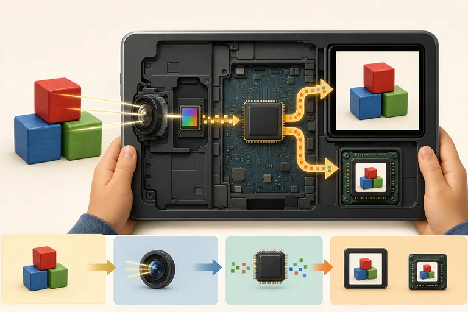

입력 Input
렌즈로 들어온 빛이 이미지 센서에 닿습니다. 센서는 작은 점마다 빛의 밝기와 색을 측정해 숫자 데이터로 바꿉니다.

렌즈로 들어온 빛이 이미지 센서에 닿습니다. 센서는 작은 점마다 빛의 밝기와 색을 측정해 숫자 데이터로 바꿉니다.
카메라 앱과 처리 장치는 센서의 숫자를 픽셀로 배열하고 밝기·색을 조정해 한 장의 사진 데이터를 만듭니다.
디스플레이가 사진의 픽셀값을 받아 화면의 작은 빛점들을 켭니다. 화면은 결과를 보여 주지만 파일을 보관하지는 않습니다.
카메라 앱이 사진 데이터를 JPG·HEIC 같은 파일 형식으로 묶고 저장 장치에 기록합니다. 그래서 전원을 꺼도 사진이 남습니다.
입력·처리·출력·저장은 외울 네 단어가 아니라 한 작업 안에서 이어지는 역할입니다.
터치 센서가 누른 위치를 감지해 운영체제와 카메라 앱에 좌표 신호를 보냅니다.
렌즈를 지난 빛이 이미지 센서의 수많은 점에 닿고, 각 점의 밝기와 색이 숫자로 측정됩니다.
처리 장치와 앱이 센서 값을 배열하고 밝기·색·흔들림을 보정해 픽셀 데이터를 만듭니다.
디스플레이의 작은 픽셀이 계산된 밝기와 색으로 빛나서 촬영 결과를 보여 줍니다.
사진 데이터와 촬영 시간·크기 같은 정보를 JPG·HEIC 등의 파일 규칙에 맞게 묶습니다.
완성된 파일을 내부 저장 장치에 기록합니다. 그래서 화면을 끄거나 전원을 꺼도 다시 열 수 있습니다.
사람이나 센서의 동작을 컴퓨터가 다룰 신호와 데이터로 받습니다.
명령에 따라 데이터를 계산·비교·변환합니다.
처리 결과를 사람이 보거나 들을 수 있게 나타냅니다.
나중에 다시 쓰도록 데이터를 기록합니다.
접수 창구는 입력, 물건을 분류하고 주소를 확인하는 작업은 처리, 배송 현황판은 출력, 창고 선반은 저장에 비유할 수 있습니다.
화면에 사진이 보이지만 아직 저장하지 않은 상태와, 파일로 저장한 상태가 왜 다른지 설명해 보세요.
동작 카드를 누른 채 알맞은 역할 칸으로 끌어다 놓으세요. 터치와 트랙패드에서도 같은 방법으로 조작할 수 있습니다.